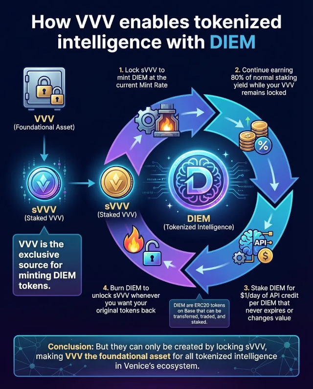

Venice AI News (📡 RSS Feed)
This page contains some of the Venice AI news that have passed my eyeballs and I think is noteworthy enough to put on this page.
TIL...
OpenAI had a data breach
👍 Privacy focused services such as Venice purposely avoid telemetry gathering services so that breaches can't happen.
When privacy isn't a core feature, a news story like the following is inevitable...
👎 One of the telemetry services that OpenAI uses had a security breach that leaked user data:
> Mixpanel was used as a third-party web analytics provider to help OpenAI understand product usage.(source: https://openai.com/index/mixpanel-incident/)
> On November 9, 2025, Mixpanel became aware of an attacker that gained unauthorized access to part of their systems and exported a dataset containing limited customer identifiable information and analytics information.
Moral of the story: 🛡️ "Just use Venice"
VVV vs DIEM infographics (with Nano Banana Pro)
Google's Nano Banana Pro is good at producing infographics. Here's 2 from the community Discord channel that explain how VVV and DIEM interact:
Version 1: 
Version 2:
Venice banned by UK government in schools
A teacher from Hertfordshire (the area where I live), wrote the following on redditYesterday I was in school using Venice with a VPN on school wifi. I then got an email from my headteacher saying that the UK government had flagged my activity on the school wifi for using Venice. They said it was because Venice is involved in cyber crime and dark web activity.(Source Reddit: https://www.reddit.com/r/VeniceAI/comments/1oxp3v9/venice_banned_by_uk_government_in_schools/)
Erik Voorhees replied to deny the claim:
> Venice CEO here. Obviously we're not involved in "cyber crime and dark web activity" lol. We do provide uncensored machine intelligence and this scares people who want to control what you think and discuss. You're always welcome to use a VPN to access Venice.Erik responded on X, showcasing the libertarian viewpoint whenever freedom is oppressed:
> We must be doing something right(Source X: https://x.com/ErikVoorhees/status/1989735544713298061.
I'm upset by my government. I would hope that an AI service that is aiming to be maximally truth seeking would be supported in educational institutions, over and above commercial AI services. Eriks response was perfect.